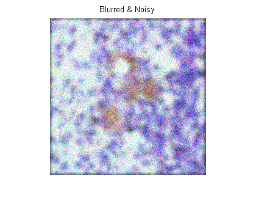
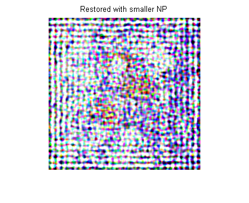
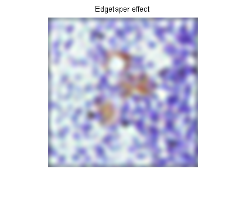
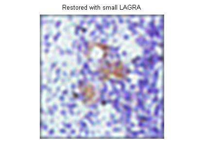
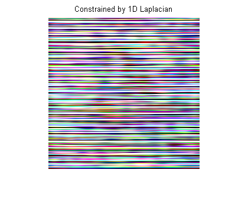

正則化フィルターを使ったイメージのブレ除去
正則化のデコンボリューションは、制限が復元された (すなわち、滑らかな) イメージに適用され、加法性ノイズについての制限情報が既知の場合、有効に利用することができます。不鮮明でノイズのあるイメージは、正則化フィルターを使った制約付き最小二乗復元アルゴリズムにより復元されます。
目次
手順 1: イメージの読み込み
この例では RGB イメージを読み込み、256 X 256 X 3 に小さく切り取ります。deconvreg 関数は、任意の次元の配列を取り扱うことができます。
I = imread('tissue.png'); I = I(125+[1:256],1:256,:); figure;imshow(I);title('Original Image'); text(size(I,2),size(I,1)+15, ... 'Image courtesy of Alan Partin, Johns Hopkins University', ... 'FontSize',7,'HorizontalAlignment','right');
手順 2: ブレとノイズのシミュレーション
ブレ (たとえばカメラの動きやフォーカス不足など) とノイズ (ランダム外乱など) を含む実世界のイメージをシミュレートします。この例では、実際のイメージをガウス フィルターで (関数 imfilter を使用して) 畳み込むことによってブレをシミュレートします。ガウス フィルターは、点像分布関数 PSF を表します。
PSF = fspecial('gaussian',11,5); Blurred = imfilter(I,PSF,'conv'); figure;imshow(Blurred); title('Blurred');
分散 V のガウスノイズをブレを含むイメージに追加することで (関数 imnoise を使用)、ノイズをシミュレートします。
V = .02; BlurredNoisy = imnoise(Blurred,'gaussian',0,V); figure;imshow(BlurredNoisy); title('Blurred & Noisy');
手順 3: ブレとノイズを含むイメージの復元
ノイズ強度 NP を 3 番目の入力パラメーターとして提供し、ブレとノイズを含むイメージを復元します。ノイズ強度の値 NP へのアルゴリズムの感度を示すために、この例では、3 つの復元を実行します。
最初の復元 reg1 では真の NP を使用します。この例では、2 つのパラメーターが出力されることに注意してください。最初の戻り値 reg1 は、復元されたイメージです。2 番目の戻り値 LAGRA は、deconvreg が収束されるスカラーであるラグランジュ乗数です。この値は後にデモで使用されます。
NP = V*prod(size(I)); % noise power [reg1 LAGRA] = deconvreg(BlurredNoisy,PSF,NP); figure,imshow(reg1),title('Restored with NP');

2 番目の復元 reg2 では、わずかに過大推定されたノイズ強度を使用するので、解像度が不足します。
reg2 = deconvreg(BlurredNoisy,PSF,NP*1.3);
figure;imshow(reg2);
title('Restored with larger NP');

3 番目の復元 reg3 では、過小評価された NP 値が使用されます。その結果、ノイズ増幅が大幅に増大し、イメージの境界線からの "リンギング" が発生します。
reg3 = deconvreg(BlurredNoisy,PSF,NP/1.3);
figure;imshow(reg3);
title('Restored with smaller NP');
 手順 4: ノイズ増幅およびリンギングの低減
デコンボリューションの前に関数 edgetaper を呼び出して、ノイズ増幅およびイメージの境界線の "リンギング" を低減します。イメージ復元のノイズ強度パラメーターへの感度が下がっていることに注意してください。以前の例からのノイズ強度値 NP を使用します。
Edged = edgetaper(BlurredNoisy,PSF);
reg4 = deconvreg(Edged,PSF,NP/1.3);
figure;imshow(reg4);
title('Edgetaper effect');
 手順 5: ラグランジュ乗数の使用
最適解がすでに見つかり、対応するラグランジュ乗数 LAGRA が与えられていると仮定して、ブレとノイズを含むイメージを復元します。この場合、ノイズ強度 NP に対して渡された値は無視されます。
LAGRA 値へのアルゴリズムの感度を示すために、この例では、3 つの復元を実行します。最初の復元 (reg5) では、以前の解からの LAGRA 出力 (手順 3 の最初の解の LAGRA 出力) を使用します。
reg5 = deconvreg(Edged,PSF,[],LAGRA);
figure;imshow(reg5);
title('Restored with LAGRA');
2 番目の復元 (reg6) では、制約の有意性を増大させる 100*LAGRA が使用されます。既定の設定では、イメージの過大な平滑化をもたらします。
reg6 = deconvreg(Edged,PSF,[],LAGRA*100);
figure;imshow(reg6);
title('Restored with large LAGRA');
3 番目の復元では、制約 (イメージの平滑化要件のセット) を弱める LAGRA/100 が使用されます。これによりノイズが増幅され、最終的には LAGRA = 0 に対する純粋な逆フィルターになります。
reg7 = deconvreg(Edged,PSF,[],LAGRA/100);
figure;imshow(reg7);
title('Restored with small LAGRA');
 手順 6: 異なる制約の使用
最適解のために異なる制約 (REGOP) を使用して、ブレおよびノイズを含むイメージを復元します。イメージの平滑化 (REGOP は既定でラプラシアンです) を制約する代わりに、1 次元でのみ (1-D ラプラシアン) イメージの平滑化を制約します。
REGOP = [1 -2 1];
reg8 = deconvreg(BlurredNoisy,PSF,[],LAGRA,REGOP);
figure;imshow(reg8);
title('Constrained by 1D Laplacian');
